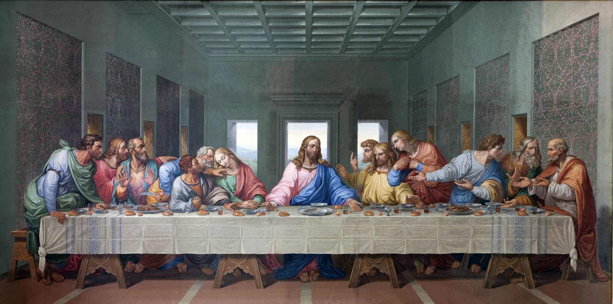
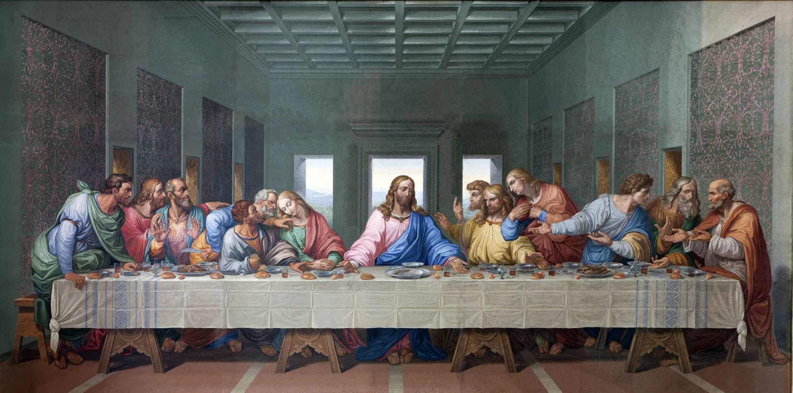

Um assassinato no Museu do Louvre em Paris e pistas enigmáticas em alguns dos quadros mais famosos de Leonardo Da Vinci levam à descoberta de um mistério religioso. Por mais de dois mil anos, uma sociedade secreta guarda informações que, se descobertas, poderiam compromenter o cristianismo, Robert Langdon, um professor especialista em simbologia e história, se envolve na investigação.